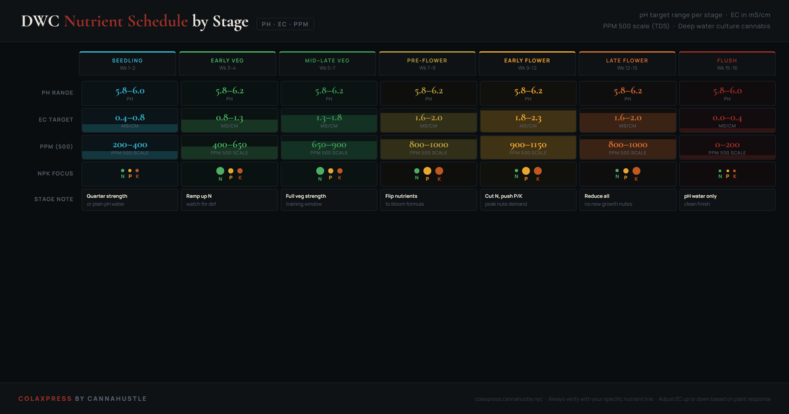

DWC nutrient schedule: pH, EC, and PPM targets by grow stage.
In deep water culture, every nutrient decision happens in the reservoir. The margin for error is smaller than soil because there is no buffer — what is in the water is what the roots receive. The schedule below gives you the working ranges for pH, EC, and PPM at each stage, with NPK emphasis and reservoir management notes for a compact cannabis run.
The single most common DWC feeding mistake is not following a nutrient line's schedule too closely — it is not understanding when to override it. PPM creep and pH drift are reservoir events, not label events. Read the roots and the water, not just the bottle.

How to read the chart
Each column represents one grow stage. The pH row shows the target range — keep your reservoir within this band at all times. Below 5.5, calcium and magnesium become unavailable. Above 6.8, iron and manganese lock out. The DWC sweet spot is 5.8–6.2.
The EC bar shows target strength in mS/cm (millisiemens per centimeter), which is the standard metric for nutrient solution conductivity. If your meter reads in PPM, use the 500 scale column — multiply EC by 500. Some meters use the 700 scale; multiply EC by 700 instead.
The NPK column shows which nutrient ratios to emphasize. Vegetative growth requires high nitrogen to build leaf mass and chlorophyll. Flowering requires high phosphorus to set bud sites and high potassium to drive sugar production and trichome development. Cutting nitrogen in flower is not optional — excess N in late flower suppresses resin and delays maturation.
| Stage | pH | EC | PPM |
|---|---|---|---|
| Seedling | 5.8–6.0 | 0.4–0.8 | 200–400 |
| Early Veg | 5.8–6.2 | 0.8–1.3 | 400–650 |
| Mid–Late Veg | 5.8–6.2 | 1.3–1.8 | 650–900 |
| Early Flower | 5.8–6.2 | 1.8–2.3 | 900–1150 |
| Late Flower | 5.8–6.2 | 1.6–2.0 | 800–1000 |
| Flush | 5.8–6.0 | 0.0–0.4 | 0–200 |
Why EC creeps up between changes
In late veg and flower, cannabis plants absorb water faster than nutrients. Each day the reservoir loses volume, but the nutrients stay — so EC rises even without adding more feed. The correction is to top off with plain pH'd water (not fresh nutrient solution) until the next scheduled reservoir change. If EC is rising faster than 0.3 mS/cm per day, your plant is stressing from heat or high VPD.
Why pH moves in DWC
pH drift in DWC is normal and expected. Roots release acids as they metabolize nutrients, and microbial activity in the reservoir (even in a clean system) produces CO2. The direction of drift tells you something: pH rising indicates the plant is consuming acidic nutrients faster than alkaline ones (common in early flower when nitrogen is heavy). pH falling suggests the opposite. Check twice daily in the first run, once per day once you know your system's rhythm.
PPM scale confusion
Two TDS meter scales exist and they give different numbers for the same water. The 500 scale multiplies EC × 500. The 700 scale multiplies EC × 700. Most North American nutrient lines publish schedules in PPM 500. If your meter reads high (e.g., 1400 PPM when the schedule says 1000), you are likely using a 700-scale meter. Divide by 1.4 to convert, or switch to EC (mS/cm) which is scale-independent and the most reliable unit to target.
DWC nutrient questions
What PPM should cannabis seedlings be in DWC?
Cannabis seedlings in DWC should start at 200–400 PPM on the 500 scale, corresponding to 0.4–0.8 EC. The root system at this stage is just establishing and cannot handle concentrated nutrient solution — starting too high risks tip burn and salt stress before the plant can uptake efficiently. Build EC gradually over weeks 2–3 as the root mass develops and the plant begins drinking noticeably between checks. If you are seeing any tip curling on seedling leaves, EC is likely too high before anything else.
What is the ideal pH for DWC cannabis?
The ideal pH range for DWC cannabis is 5.8–6.2, with 5.8–6.0 as the most reliable operating window. Below 5.5, calcium and magnesium become unavailable regardless of the amount in solution. Above 6.5, iron and manganese lock out. Unlike soil, DWC has no buffering capacity — pH shifts affect nutrient availability within hours, not days. Check pH twice daily during your first run; once per day once you understand how your system moves. The direction of drift tells you something: pH rising typically means the plant is consuming more acidic nutrients and producing alkaline metabolites.
When should I increase nutrients in DWC?
Increase EC when the plant is consuming nutrients faster than water — meaning EC is dropping between daily checks while water level is also falling. If EC holds steady or climbs while water drops, the plant is drinking water but not nutrients, which usually signals pH out of range or root stress rather than a feeding issue. A healthy DWC plant in mid-veg will typically drop EC by 0.1–0.2 mS/cm per day at peak feeding rate. Always correct pH before diagnosing a feeding problem.
How often should you change the DWC reservoir?
Change the DWC reservoir completely every 7–10 days in vegetative growth, and every 10–14 days in flower when you are also topping off with plain pH water between changes. If pH becomes increasingly difficult to stabilize or EC is erratic despite correct top-offs, change the reservoir early — mineral salt accumulation from successive top-offs creates imbalances that a complete reservoir change resolves within 24 hours. Never let a reservoir run longer than two weeks without a full change.
Related guides
DWC for beginners
Root zone, oxygen, reservoir management, and how DWC behaves differently from soil.
VPD chart for cannabis
VPD directly affects nutrient uptake — understand the atmospheric side of the feed equation.
Root problems in DWC
How nutrient imbalances, reservoir temperature, and pH drift manifest in the root zone.